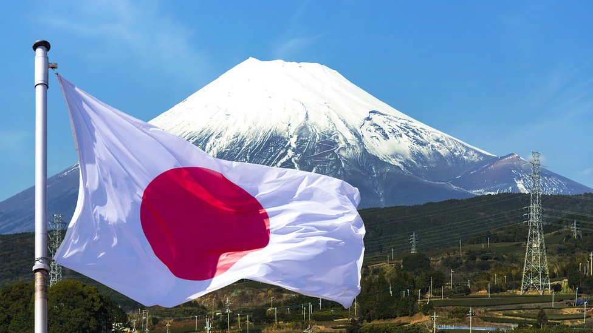
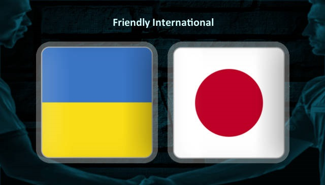

Історія Японії
Японська острівна держава - острівна держава в східній Азії. Розшташована на японському архіпелазі, межує з Японським мо- рем на заході з Тихим океаном на сході, також простягається від Охитського моря на північному сході, до Східно-Китайського та Філіппінського морів на південному заході. Будучи частиною Тихоокеанського вогняного кола, Японія охоплює архіпелаг з 14 125 островів[7]; п'ятьма основними островами, з півночі на південь є Хоккайдо, Хонсю, Сікоку, Кюсю та Окінава. Офіційно поділена на 47 адміністративних одиниць — префектур та 8 традиційних регіонів. Приблизно три чверті місцевості країни гірські. Як результат, Японія — одна з найбільш густонаселених та урбанізованих країн світу. Найбільша урбанізована територія — Велике Токіо, зосереджена на столиці, Токіо, яка є найбільш населеним мегаполісом у світі, де проживає понад 38 мільйонів людей . З населенням у 126 476 461 особу Японія посідає 11 місце у світі та 4 в Азії за кількістю населення. Археологічні дані свідчать, що Японія була заселена ще в період пізнього палеоліту. Перші згадки про країну з'являються в китайських текстах з I століття нашої ери. Між IV та IX століттями королівства Японії поступово об' єднувались під Імператором та імператорським двором, які базувалися в Хейан-Кьо (сучасне Кіото). Однак, починаючи з XII століття, політичну владу утримували наступники військових диктаторів (сьоґуни), магнатів (даймьо) та класу воїнської знаті (самураї).
Видатні пам'ятки
Важли́ві культу́рні па́м'ятки Япо́нії (яп. 重要文化財, じゅうようぶんかざい, МФА: [d͡ʑuːjoː bunkad͡zai̯]) — пам'ятки культури Японії, що мають високу мистецьку та наукову цінність. Визначаються міністром культури Японії з числа творів образотворчого мистецтва, ремесл , архітектури, археологічних та історичних джерел на основі закону «про охорону пам'яток культури» від 1950 року. Мають статус нижчий національних скарбів Японії. Облік пам'яток проводить Управління культури Міністерства культури і науки Японії.
П'ятирума пагода на острові Іцукусіма
Відносини
Украї́нсько-япо́нські відно́сини (яп. ウクライナと日本の関係) були офіційно започатковані в 1992. Перші ж контакти між українцями і японцями мали місце на теренах Сибіру та Примор'я починаючи з 18 століття. Через тривалу залежність України від Росії, до кінця 20 століття, відносини між обома народами визначалися ступенем розвитку японсько-російських міждержавних відносини. З одного боку, українці брали активну участь в російсько-японській (1904—1905) та радянсько-японській (1945) війнах, колонізації японського Сахаліну та Курил. З другого боку, вони співпрацювали з японським урядом з метою унезалежнення Зеленого Клину від Росії. 1991 року Японія визнала незалежність України і встановила міждержавні відносини. Однак відносини між обома країнами перебувають у зародковому стані. Японія не інвестує в українську економіку, а її підприємства практично не представлені на українському ринку. Україна зі свого боку, не створює умови для належного інвестування, що гальмує розвитком двосторонніх відносин. Станом на 2009 рік розмір фінансової допомоги Україні з боку Японії, включно з позиками, становив 85,11 млн доларів США[1]. Культурно-наукові зв'язки між обома країнами перебувають на рівні ознайомчих виставок, короткотермінових стажувань, мовних курсів для початківців. Порівняно з іноземцями з країн Америки, Європи чи Азії, японці практично не відвідують Україну. Зростання японського інтересу до України мало місце в період Помаранчевої революції 2004 року. Токіо сподівався на появу демократичної і реформованої України, вбачаючи в ній силу, що могла стримувати Росію на заході. Проте цей інтерес поступово згас через неефективність роботи урядів Віктора Ющенка та приходу до влади Віктора Януковича, що в японських офіційних колах мав репутацію проросійського політика[2].
